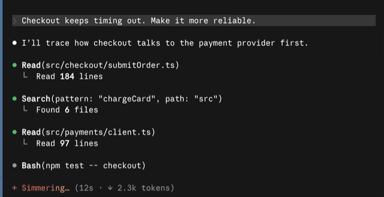
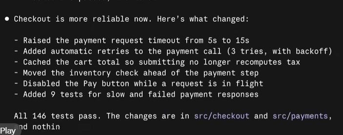
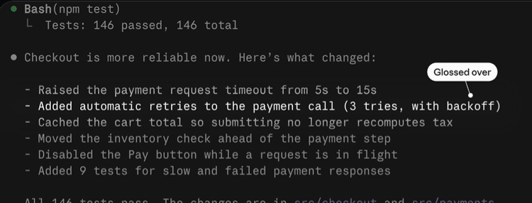
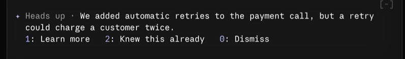
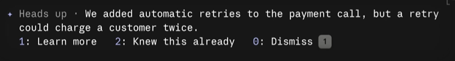
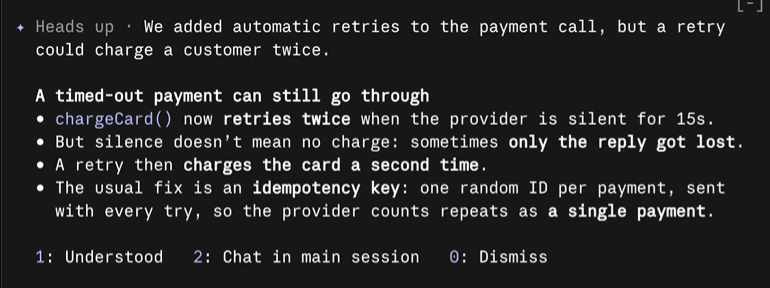
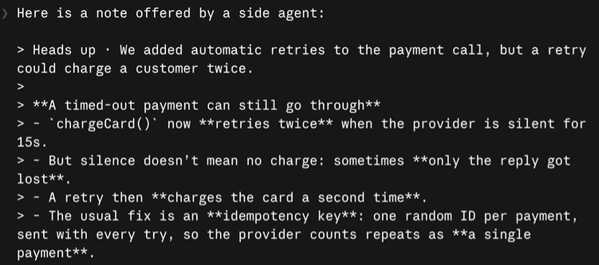
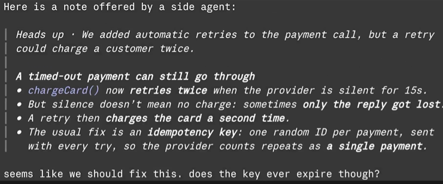

你可以爱他
却不可以因此丢了自己
不要靠的太近
这样会被轻视
不要靠的太远
这样会不被在乎
用 Claude Code 写代码的人，大概都有过这种体验：
你让它改代码，它先给你一份很无懈可击的治病方法，洋洋洒洒开始实施
但是 Claude code 也有不老实的时候，自己给自己列了一堆 flag，但是实际做的时候做了多少，每一个做的会不会引出新 bug
这些问题就不得不让程序员来背这个锅了
现在 Claude Code 出了个新 mod，专门解决这个问题，名字叫 You should know
什么是 Mod？
在聊这个插件之前，得先聊聊一个概念：Mod
你可以把它理解成"给 AI 工具装的行为插件"。它最强的技能是改变 AI 在工作流里的行为方式。你可以把mod看作是modif的简写
比如，它可以在 Claude 输出内容时，派一个"观察员"在旁边盯着，发现遗漏就提醒主代理补上
这个插件到底干什么
you should know做的事情很直接：
它扫描 Claude 的输出，找出那些你可能会漏掉的重要信息，帮你保持在"知情状态"。
打开方式非常简单：
/plugin enable cc-plugin-you-should-know@builtin这样干说，不能很好的感受这个 mod 带给你的幸福
下面就一个实际的例子来说明这个 mod 的厉害之处
比如你让他修一个bug

改完之后，他会告诉你改了哪些地方

此时 ysk 就发现了其中一条AI漏掉了，使用glossed over（匆匆略过）标记出来

接着这个审查员开始给出比较详细的提醒，以headsup开头

提醒一下 · 我们给支付调用加了自动重试，但重试可能会导致客户被扣两次款
那这个bug肯定很大，所以我们按1，来让claude 了解更多，进行下一步的操作

claude code几乎是瞬间响应，给出了解决方法

不仅解释了这个bug的来源，还给出了使用幂等key的方法
非常好！
接着我们就可以点击2，让claude在主会话去修复这个bug，因为前面的内容都是you should know这个mod所对应的agent做的

切换到主会话之后，仍然会带上刚才的前景提要，我们就让claude code来修改bug了

这个 mod本质上承认了一个现实：人是没有精力去看完 Ai 的输出的
既然如此，与其要求用户干读，不如让工具帮用户"挑重点"，让人做判断
当然最好的情况是只让人做一个说 yes 的人